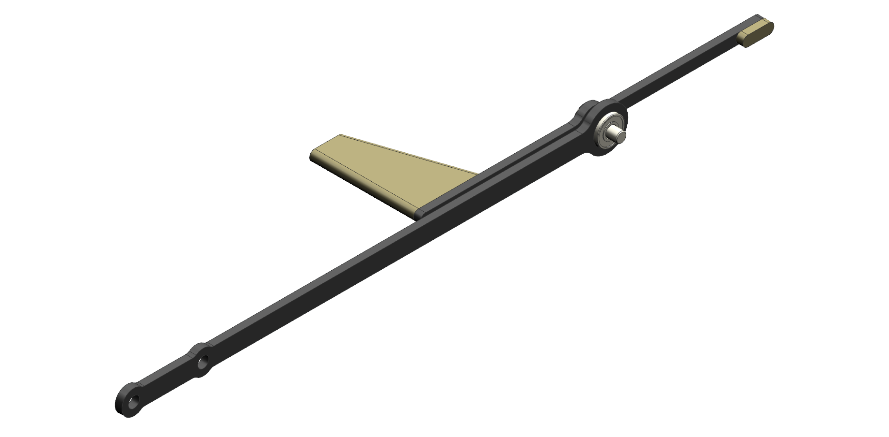
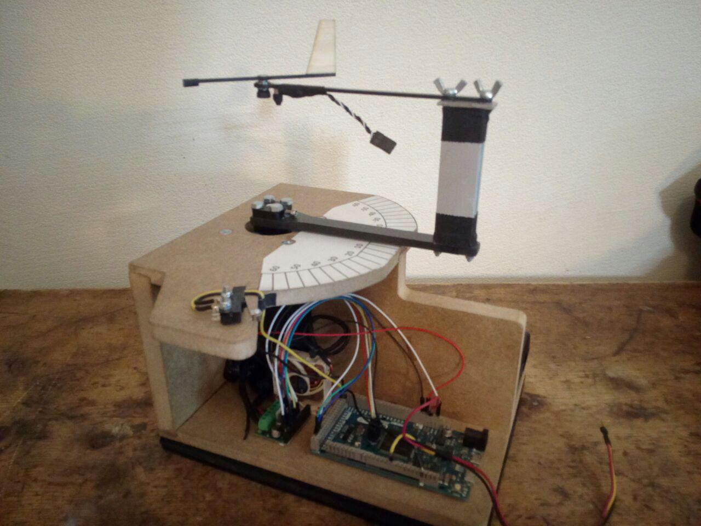
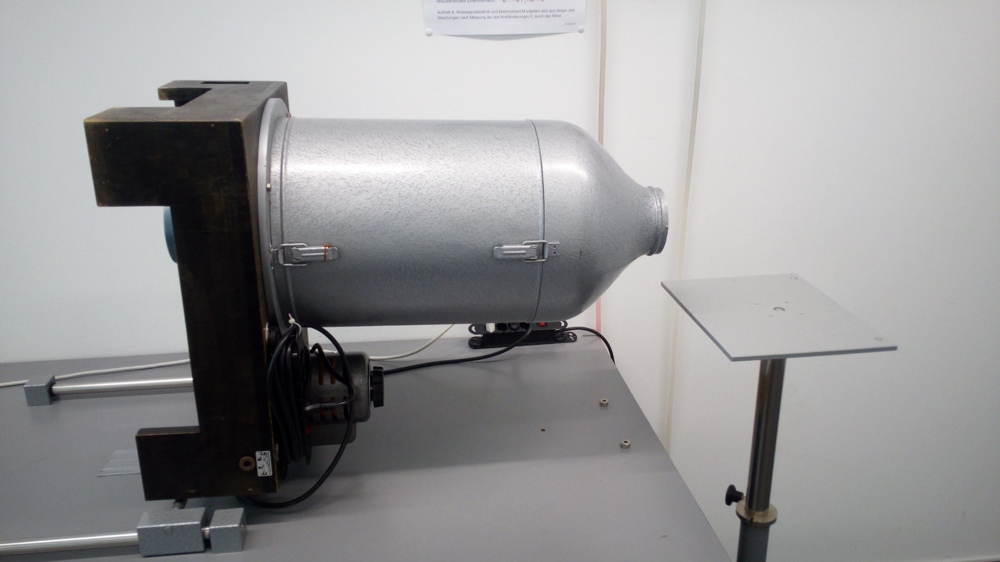
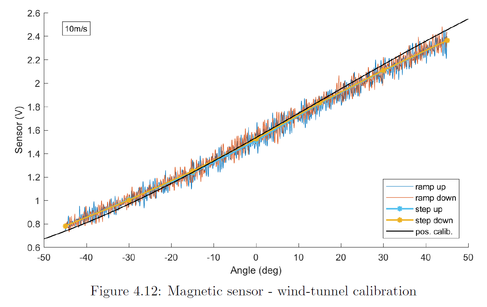
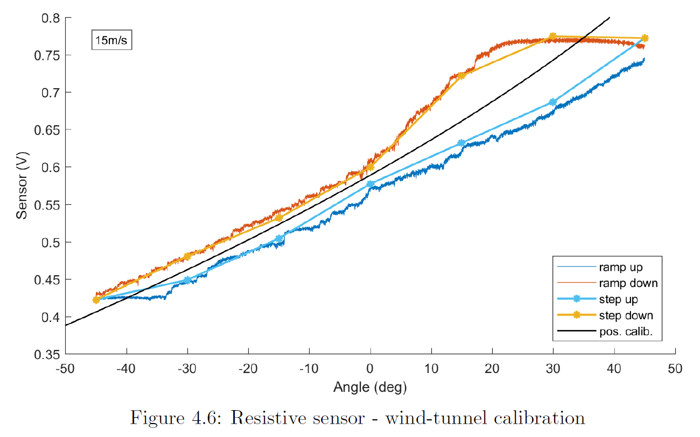
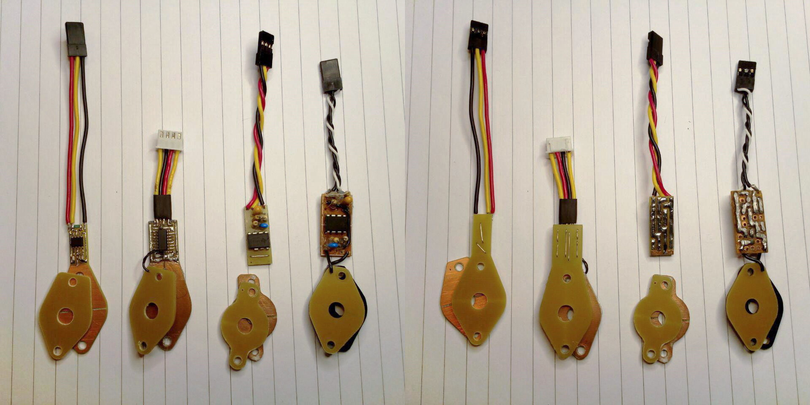
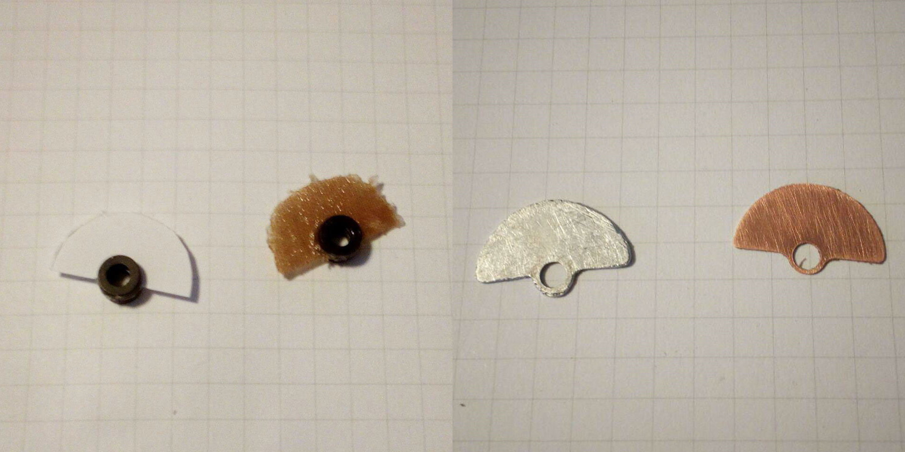
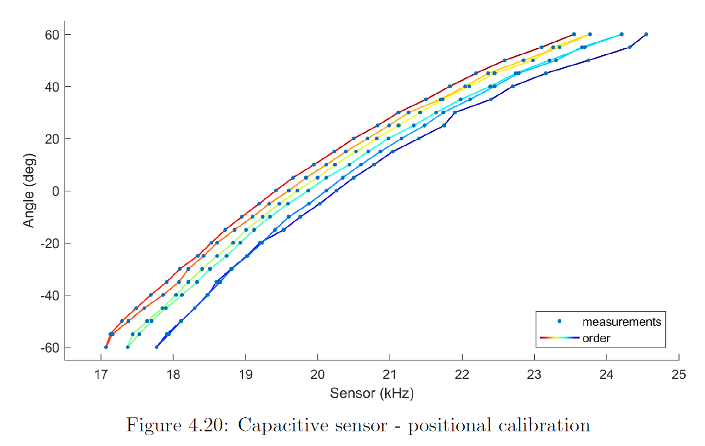

| Download: | bachelor_thesis.pdf |
I did my bachelor thesis designing, building and analysing low-cost small-scale angle of attack vanes for the Autonomous Systems Lab, ETH Zürich. It was clear early on, that the best design would use a magnetic sensor, but to keep things research oriented and to give myself a challenge I also tried making resistive and capacitive sensors.
All my vanes had the same base design, with a carbon-fiber frame that I milled out at home, a ball-bearing pivot, a balsa wood wing, and a little steel counterweight to balance the vane. They were tested for their steady-state and dynamic responses on a purpose-built motorized testbed that rotated the stationary part of the vane, while it sat inside a small windtunnel.
 The magnetic sensor vane turned out to be in fact the best performing one, besides being very easy to build. Although the steady-state calibration test plotted below shows what seems to be a bit of flutter. This sensor works by mounting a radially polarized magnet on the pivot of the vane and by then measuring the strength of its magnetic field with a Hall effect sensor. As the vane rotates, so does the magnet, changing the magnetic field sensed by the sensor, which in turn outputs an analog voltage that is thuss correlated to the angle of attack. I ended up making a few of these, and they were used in various aerial robots at ASL after I left for my master studies.
The vane with the resistive sensor was more of an excuse to get the number of tested vane designs up to three. Using a low-cost potentiometer to do position sensing is far from ideal, because they typically have quite high friction. This can be clearly seen in the hysteresis during the calibration run in the wind tunnel. Worse even, is that at low windspeeds the vane doesn't move at all. Not recommended.
I put by far the most effort into the capacitive sensors because I made them largely from scratch. They work by changing the medium inside a plate capacitor as the vane rotates. This changes the capacitance, which in turn can be converted into a change in output frequency of a 555-timer circuit, which then can be easily read by a microcontroller. In theory this does not require any contact to happen, but in practice the capacitor gap needs to be verry slim to get a large enough capacitance. I played around with a lot of mediums, and even taught myself how to design, manufacture and solder my own circuit boards for this sensor. Sadly I couldn't resolve the issue of the sensor reading drifting over time, making it practically useless. Nowadays I know how I'd try to fix that problem, but it is a bit to late and probably unnecessary.
  About two thirds into my bachelor thesis I heard that Jonas, a friend from the ftero student project, could use an angle of attack vane for his own bachelor thesis in system identification of an RC glider. So I made an improved version for him, using what I had learned. It had a larger counterweight closer to the pivot to reduce wake, a much larger wedge-shaped wing for stability, two instead of one ball bearings for rigidity, and an Arduino to read the analog voltage close to the sensor and directly interface with the Pixhawk PX4 flight controller over I2C. As far as I've heard it worked pretty well.
Three years later I was working on my own UAV glider (see project). Although I didn't have any use for it, I thought that I should mount one of my angle of attack sensor on it. And while I was at it, I also mounted an angle of slip sensor (same thing, just rotated 90°). Both of them work just like the V2 and interface with a Pixhawk flight controller, giving me the theoretical possibility to implement something like Boeing's MCAS, but likely even less reliable.